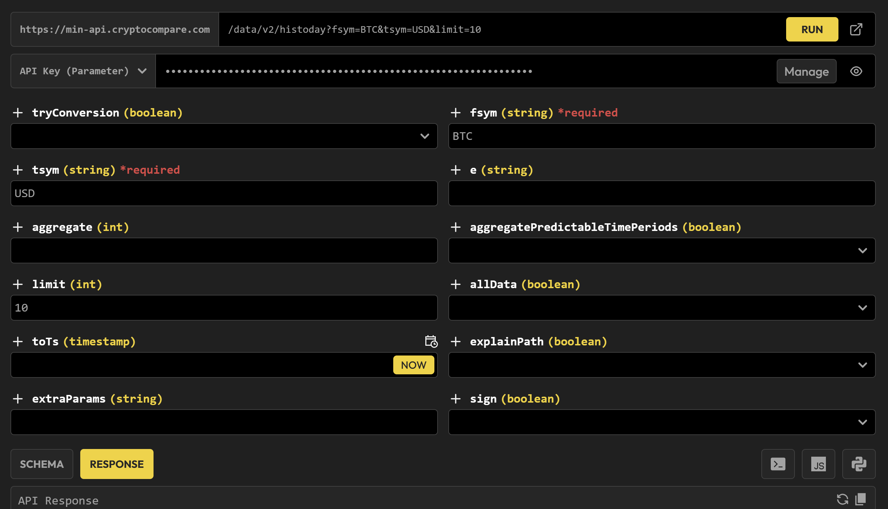
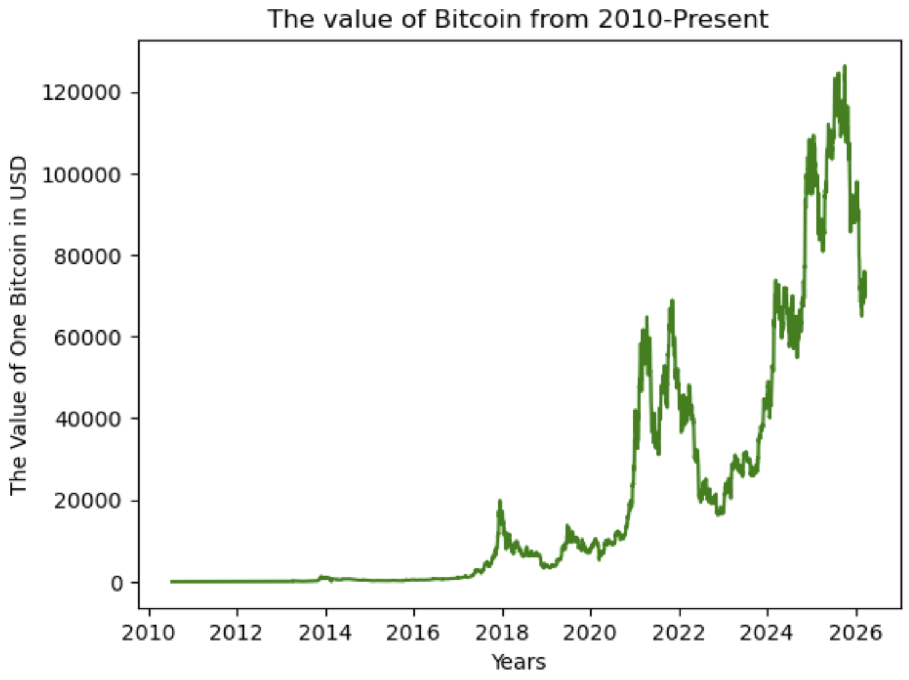

Preface
The actual process!
Setting up the data
I found this website called “CoinDesk”, which was a price data tracker for many cryptocurrencies, such as Bitcoin! This website actually has an “API call preview” with parameters on the documentation, so it was much easier to implement the output in my program!

What the API call preview looks like!Here’s what I basically did:
url = "https://min-api.cryptocompare.com/data/v2/histoday?fsym=BTC&tsym=USD&aggregate=1&limit=1&allData=true&api_key=*******************************"
page = requests.get(url)
data = page.json()['Data']['Data']
df = pd.DataFrame(data)
df["time"] = [datetime.datetime.fromtimestamp(time) for time in df["time"]]
df
The API key is censored for safety.
I took the URL and extracted the historical data of the daily value of Bitcoin from the JSON! The time was in UNIX Epoch, so I had to convert it into more human-readable time.
The parameters (from the URL):
- fsym: the cryptocurrency you are interested in
- tsym: the currency you want to convert the crptocurrency into
- aggregate: the number of days you want to aggregate the data into one data point
- limit: the number of data points you want to return
- allData: Returns all data
So far, this isn’t too bad. I basically called the data from an API and converted it into a pandas DataFrame!
Making a quick data visualization:
fig, ax = plt.subplots()
ax.plot(df["time"], df["high"], color = "green")
plt.xlabel("Years")
plt.ylabel("The Value of One Bitcoin in USD")
plt.title("The value of Bitcoin from 2010-Present")

Figuring out what model to use (the hard part)
Since we are trying to predict a value, we will be using some sort of supervised regression model, but we can’t use any generic model as a major constraint is that there are timedates, we have to make a model that is contingent on the datetime.
Last modified on 2026-06-13